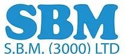
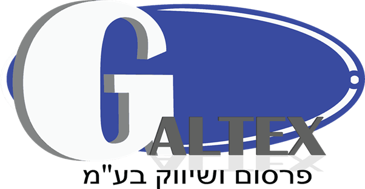
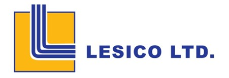
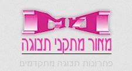
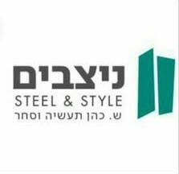
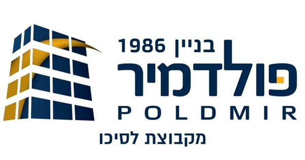
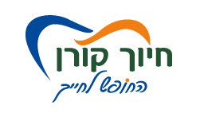
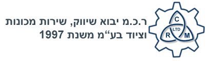

זמינות ומענה מהיר
כשיש תקלה או צורך דחוף, אתם לא נשארים לבד. אנחנו זמינים, מעדכנים ומלווים עד לפתרון מלא.
 עידן המחשבים
שירותי מחשוב, שרתים
עידן המחשבים
שירותי מחשוב, שרתיםשירותי מחשוב, אבטחה ותמיכה לעסקים שרוצים לעבוד יציב, מהר ובשקט
אנחנו מקימים, מנהלים ומאבטחים את סביבת המחשוב של העסק שלכם, כדי שהשרתים יהיו יציבים, המידע יהיה מוגן והעבודה היומיומית תמשיך בלי הפרעות מיותרות.
למה לבחור בנו
אנחנו לא רק מטפלים בתקלות. אנחנו עוזרים לעסק לעבוד מהר יותר, בטוח יותר ועם פחות עצירות בדרך.
כשיש תקלה או צורך דחוף, אתם לא נשארים לבד. אנחנו זמינים, מעדכנים ומלווים עד לפתרון מלא.
תשתיות, שרתים, אבטחה, גיבוי ותמיכה, הכל תחת מעטפת אחת שמותאמת לצרכים של העסק שלכם.
אנחנו משלבים Firewall, אנטי וירוס, גיבוי ומערכות חכמות כדי להגן על המידע והמשכיות העבודה.
עובדים עם מגוון חברות וארגונים, מבינים את השטח ויודעים להתאים פתרון שגם עובד וגם נשאר יציב לאורך זמן.
השירותים שלנו
מהעסק הקטן ועד הארגון הגדול, אנחנו מקימים, מנהלים ומאבטחים את סביבת העבודה הדיגיטלית שלכם מקצה לקצה.
תשתיות תקשורת ורשת יציבות לעבודה מהירה, כולל פריסת כבלים, רשתות וסיבים אופטיים.
הקמה, תחזוקה וניהול שוטף של שרתים, עם דגש על יציבות, אבטחה והמשכיות עבודה.
Outlook לעסקים עם סביבת דוא"ל מקצועית, מאובטחת ונוחה לעבודה מול לקוחות וצוותים.
חומת אש להגנה על הרשת, השרתים והמידע הרגיש מפני חדירות, נוזקות וסיכוני אבטחה.
הגנה למחשבים ולרשת, ניקוי מערכות שנפגעו ושמירה על המידע גם אחרי טעות אנוש.
גיבוי ושחזור מהיר לקבצים ולמערכות, כדי שלא תאבדו מידע קריטי ברגע האמת.
פתרונות Check Point ו-FortiGate לניטור, זיהוי חולשות וחיזוק רמת האבטחה של העסק.
מצלמות אבטחה איכותיות בהתאמה למשרד ולעסק, להגנה על העובדים, הציוד והמידע.
שקט תפעולי לעסק
במקרה של תקלה, ולו הקטנה ביותר, מיד ניצור אתכם קשר, נעדכן בפירוט במצב המערכות ונישאר עמכם בקשר עד למציאת פתרון מלא של התקלה וחזרה לעבודה תקינה.
כבר עובדים איתנו










מה הלקוחות אומרים
"אנחנו מקבלים מענה מהיר, שירות מסודר ושקט אמיתי בכל מה שקשור למחשוב ולאבטחת המידע."
חברת תעשייה ותיקה"המעבר לעבודה יציבה ומאובטחת הורגש כמעט מיד. יש תמיד עם מי לדבר כשצריך."
עסק בצמיחה"היתרון הגדול הוא שמישהו באמת רואה את התמונה המלאה: שרתים, רשת, גיבוי ותמיכה שוטפת."
חברה רב־מחלקתיתשאלות נפוצות
ריכזנו תשובות קצרות לשאלות נפוצות על שירותי מחשוב ותמיכה לעסקים.
אנחנו מספקים פריסת תשתיות, שרתי אינטרנט, Outlook לעסקים, Firewall, אנטי וירוס לרשתות, מערכות גיבוי, מערכות אבטחה ומצלמות אבטחה.
כן. צוות התמיכה שלנו מנטר מחשבים ושרתים מדי יום, מזהה תקלות בזמן ומלווה אתכם עד לפתרון מלא וחזרה לעבודה תקינה.
בהחלט. השירותים שלנו מתאימים לעסקים קטנים, בינוניים וגדולים, עם התאמה לפעילות, לתשתיות ולרמת האבטחה שכל עסק צריך.
אפשר להשאיר פרטים בטופס, לשלוח הודעה בווטסאפ או להתקשר ישירות למספר 054-4411665 ולקבל מענה מהיר.
גם אתם רוצים לעבוד איתנו?
השאירו פרטים ונחזור אליכם עם כיוון ברור לפתרון המחשוב, האבטחה או התמיכה שמתאים לעסק שלכם.